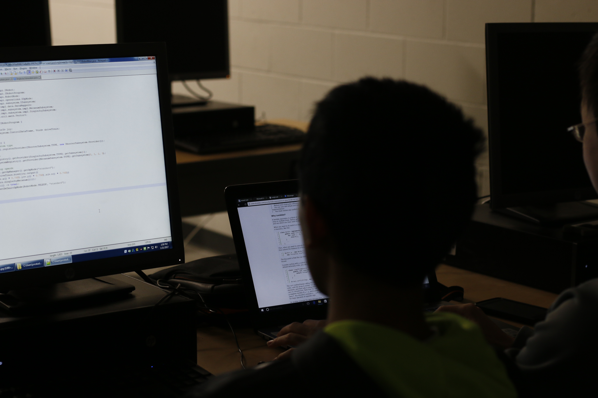

We are Iowa City Robotics Team 167 Children of the Corn. Founded in 1998, our team is composed of students in ninth through twelfth grade from several Iowa City area high schools. Currently, our team consists of students from Iowa City West High School, Iowa City High School, and Liberty High School. We are a diverse group of over 30 members. We compete in FRC, or the FIRST Robotics Competition, and have been competing for 21 years! In 2019, we participated in two regional competitions and got to finals and semifinals, respectively. We work hard to extend the FIRST motto of gracious professionalism and teach valuable STEM skills to each student that joins the team.


Kirkwood Community College generously provided us workspace at the Kirkwood Regional Center in Coralville, Iowa. This is where we have meetings, build, work with mentors, cut materials, create web content, and spend the majority of our time during build season.
